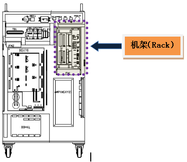

可能是因主板与伺服板之间的通讯异常或急剧的动作变化而发生此错误。若基板之间发生通讯问题，正常的指令就不能从主板传达到伺服板，此时可能会因错误的指令导致机器人运行异常，因此，发出错误信息并停止机器人。同时，急剧动作会造成驱动装置不能跟随位置指令，因此发出错误信息并停止机器人。
|
1. 请检查主板与伺服板是否正确安装。 n 请检查基板是否正确安装。 n 请检查基板是否有异常。
2. 请检查是否有机器人急剧动作的作业程序。 |
1. 请检查主板与伺服板是否正确安装。
若主板与伺服板安装不正常或基板有异常问题，可能出现通讯问题，从而发生错误。
1) 请检查基板是否正确安装。
请从机架中拆除主板及伺服板后重新安装。

图 5.65 控制器内部机架位置
2) 请检查基板是否有异常。
为了正确判断基板的异常与否，请更换基板。
2. 请检查是否有机器人急剧工作的作业程序。
请确认是否在机器人动作急剧变化的区域中发生错误。
如果在急剧动作中发生错误，就需要修改该作业程序。
在急剧动作中发生错误的原因如下。执行作业程序时移动短区段而导致机器人的姿势严重扭曲。此时机器人的轴速度突然提高，伺服板不能跟随其速度时会发生错误。解决方法是修改姿势急剧变化的示教点或修改机器人姿势。